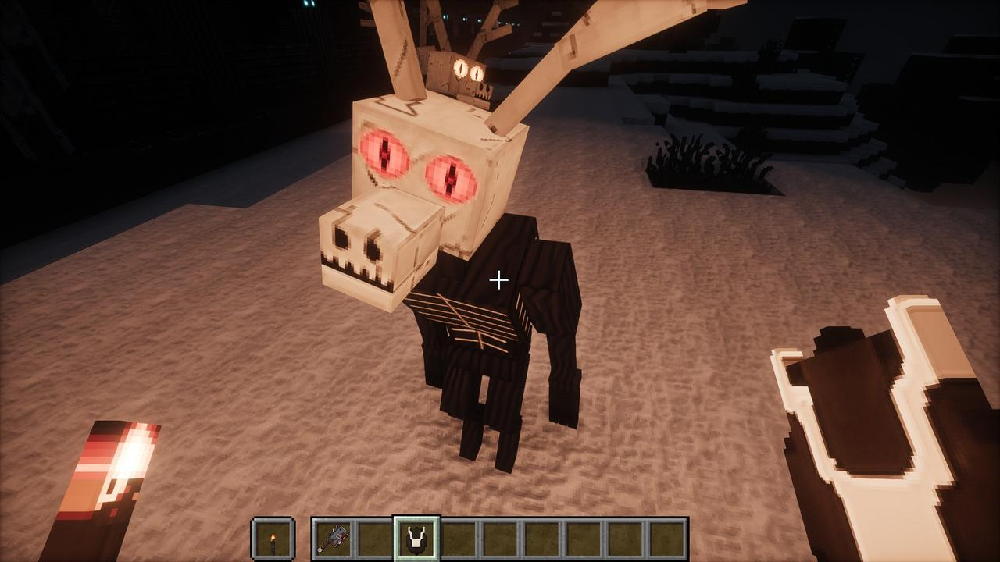
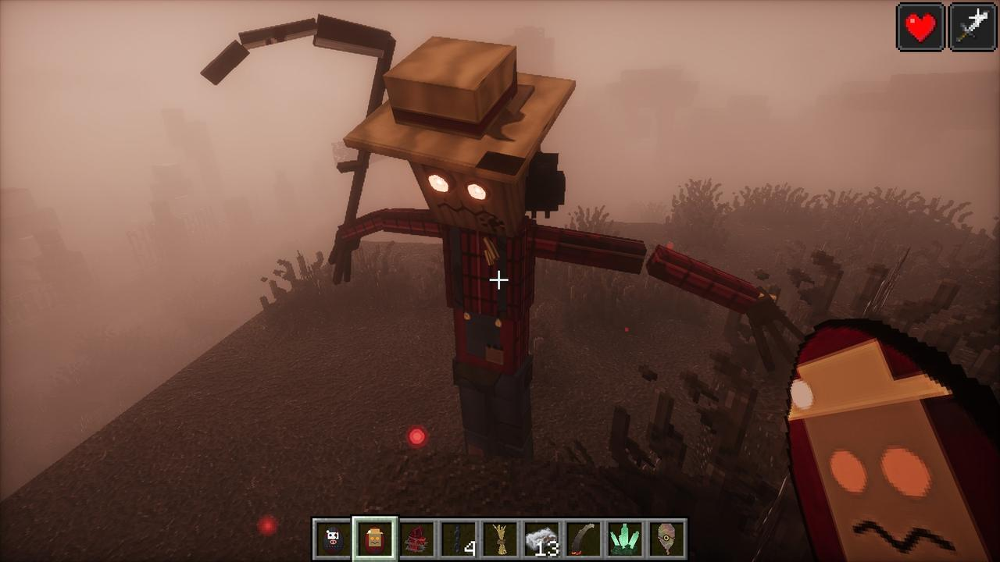
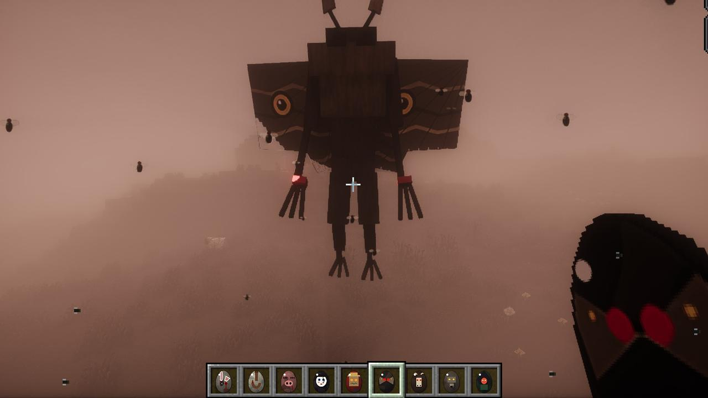
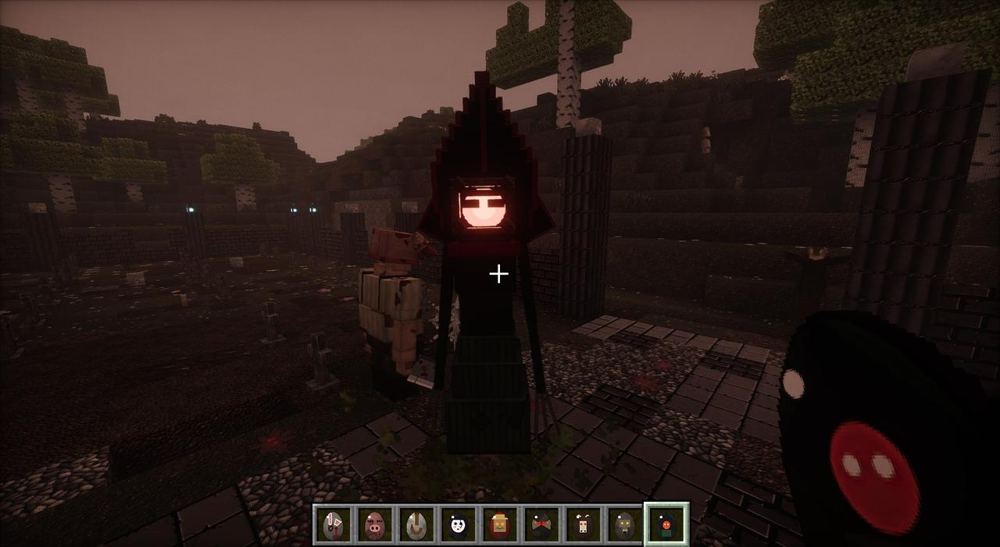

Every creature in Static Hollow, in the order you meet them, across all eight chapters. Bosses and the creatures with the most to them have their own case files; everything else is here. Each chapter's creatures are marked in that chapter's colour.
Almost everything has its own 3D model, sounds, attacks and death, its own drop, and a spawn egg in the Static Hollow creative tab. Since 1.48.0 nearly all of them can also be taken over by the parasite and turned into something else: see the Turned. The twenty creatures of chapters one to three that have heads (the nine creepypastas, the nine killers and cryptids, the Gardener and the Rootlings) drop theirs the first time you kill each, then at 10% plus 5% a level of Looting. The Hollow Saint has no head to drop.
Chapter one: the Nine
They hunt everyone once the Forsaken Altar is awake, mostly in the dark. All nine are dragged back down when the Breach Altar wakes.
??? (the Watcher)
Stares, waves, points, peeks, and sometimes stands right behind you. It speaks at every turning point in the story.
The Hollow Saint
What the nine were all pieces of. Raised at the cathedral's reliquary with one head from each.
Hollow Neighbor
Stalks you, vanishes and reappears behind you, knocks on doors and whispers. Every few minutes it sends you a chat message pretending to be a friend, and if you're indoors near a window it rises up behind the glass, taps on it and says it to your face. Its pinprick pupils follow you, even on its placed head.
Attacks: The Long Neck (its neck stretches across the gap and its mouth drags you in) and Turn Around (it's gone in a puff of smoke and its hands are on your shoulders from behind).
Stitchjaw
Crawls flat like a lizard and climbs walls. Every bite that lands opens the wound further: Bleeding I, II, III.
Attacks: Death Roll (jaws locked on you, rolling like a crocodile) and Seam Burst (every stitch tears at once in a ring of thread, bone and blood).
Weeping Shepherd
Weeps, and stares if you stare. Hunts the undead. A rusted bell tolls as it walks.
Attacks: The Toll (three rings of pale light along the ground that burn the undead) and The Crook (a crack of pale fire torn along the ground).
Lullaby Mother
Steals villagers and whispers a broken lullaby. Her hits can drag you into the Hollow, a sealed black room under the world, for 15 seconds. When she dies she draws a kitchen knife and drives it into her own eye.
Attacks: Hush Now (she rocks you like a baby while the life runs out of you; hurt her to make her drop you) and The Knife (five stabs, fast).
Broadcast
A man with an old CRT television for a head, its screen crawling with live static. It skips toward you like a dropped video frame. Don't look at it: staring at the screen burns you every second. Don't touch it: it shocks. Its antenna tips glow green once it has seen you, burn red while you look at it, and flash red when it strikes.
Attacks: Dead Air (a flickering line pins where it's aiming, then a beam of raw static) and Frame Skip (it drops three frames and is beside you, behind you, in front of you).
Little Lamb
A crying child that follows you. Hit it and it shows its real face and gets fast. Hunts livestock.
Attacks: The Shriek (a cone of scream) and Pounce and Gnaw (it clings to you, chewing).
The Hymnal
Floats. Its song slows and weakens you and heals the other creepypastas. At Bleeding III blood wells up along the stitches over its eyes, but it never stops singing.
Attacks: The Page Storm (pages with edges like razors) and The Rapture (a chord from a choir that isn't there lifts you off your feet).
The Underneath
Buried with only its hands showing; stand near it too long and it claws its way out. It breathes under your bed and comes up for you when you lie down. Get out of bed within about four seconds. Never in Creative or on Peaceful.
Attacks: Hands From Below and Burrow (a ridge of earth tears toward you and it bursts up under your feet).
Antlerkin
Imitates cows, pigs and sheep to lure prey. Faster in the dark, and fastest at night, when it calls and runs its prey down until dawn with its eyes burning ember to amber in its skull.
Attacks: The Charge (let it hit a wall and it stands there dazed) and The Toss.

Mourners
Praying, their heads turning after you. Hurt one, or play the organ, and they all stand up. At nightfall the dead are back in their pews. At the Soul Well they kneel round the altar as its keepers.
The Interred
Open a sarcophagus and what was buried in it might be the Interred, who sits up and climbs out. The sealed ones open by themselves when you come close.
The Lullaby Mother, the Broadcast, the Underneath, the Hollow Neighbor, the Watcher and the Antlerkin have no blood left to lose and never bleed.
Chapter two: the killers and the things from the woods
Five killers and four cryptids come up once the Breach Altar is awake. They stalk first and only come for you once they've watched long enough, or you hit them.
The Mended
All nine sewn into one thing by the Watcher at the Mending Altar.
The Bunnyman
A tall man in a filthy rabbit suit with a fire axe. Catch him watching and he stops dead, tilts his head and waves. When he comes, it's a crouch and a spring with the axe coming down as he lands. Chops through wooden doors on Normal and Hard. Throws a hatchet, and goes into a frenzy of chops when badly hurt.
The Hookman
A starved giant in a torn straitjacket, gauze round his head, a rusted meat hook for a hand. He flings the hook on a chain, catches you and reels you in, and pulls riders off horses, boats and carts. Every cut bleeds. He also sweeps the hook low and impales you on it.
The Hogshead
A butcher the size of a doorway in a rotting pig's head. He squeals, lowers his head and charges; if he reaches you he takes you by the throat. Sidestep and he slams into the wall, stunned: hit him then. Also slams the ground and gores.
The Porcelain Man
A life-size porcelain doll in a tailcoat. While anyone is looking at him he doesn't move, only his glass eyes; look away and he's closer, in a different pose. He opens doors. He can only be hurt from behind. His music box slows and blinds whoever isn't looking at him.
The Harvestman
A scarecrow on a post in a field, a crow on its shoulder. Walk close and it climbs down at you. Look away for long and the post is empty. Its scythe sweeps wide: get out of the arc. It calls its crows down and tears roots up out of the ground. Killed, it falls apart into straw and the crow flies off.

Mothman
Red eyes in the night sky. It circles high and hangs still when you look up at it. Then it screeches (darkness at the edge of your sight, legs heavy), dives claws-first, and sometimes takes you up and lets go. Most of all by rivers and on boats. Bring a bow.

The Jersey Devil
Goat legs, bat wings, a horse's skull on a long neck. It screams when it starts hunting (weakness, nausea), springs into the air and glides down onto you; up close it rears and kicks. Breathes fire and sweeps you with its tail.
Dogman
A wolf that walks like a man. It runs on all fours, faster than you, stands up to howl (it roots you to the spot), pounces and mauls: claw, claw, then a bite that bleeds. It drags you down by the leg and flings you.
The Flatwoods Monster
A tall shape in a spade-shaped hood with a glowing red face. It glides, never hurrying, leaving a burning mist. Stare into its face too long and you're sick and slow. Up close it breathes the mist at you; its claws poison.

Out in the Void
The Hand
Pale grey going violet, bigger than a man, on an arm going down and down into the dark. It catches anyone who falls off an island and sets them back down. It hurts.
Driftlight
A bell of pale flesh the size of a lantern, lit from inside, swimming like a jellyfish. It drops Drift Jelly: Slow Falling for 40 seconds and sight in the dark for 20.
Lamprey
A long eyeless eel with a glowing lure. It coils, flares six toothed lips and comes at you straight as a whip, then fastens on and drags you out over the dark. Hit it hard to make it let go. Drops Lamprey Teeth and sometimes its lure, still lit.
Chapter three: the glasshouse
The Gardener
The Head Gardener, grown into by the flower he tended.
Rootling
Knee-high things with a pale bulb for a head, red pinprick eyes and a grin of thorns. They chatter, leap at you and burrow away to come up somewhere else. They drop Knotted Roots, which make the Gardener's Weeds.
The Great Flower
A parasitic bloom the size of a room, its tendrils feeling about. Get close and it latches on: you're Sapromyiophilous, carrion flies swarm you, and it feeds. Its tendril drags things in and swallows them whole. Three good hits tear its tendril and free you.
Giant Flytrap
A Venus flytrap that snatches you up and chews. Mash E to force the jaws open.
The Great Bloom
Far down under the islands of the Bloom, and later risen through the glasshouse.
Tentacle of the Great Bloom
Eight of them round its mouth, thick as trees, or towers.
Chapter four: the Flesh
Every one of the Flesh's infected has a split jaw that swings apart sideways, glowing veins, no nose, three sinews out of its back and a blister bursting out of one shoulder. They shamble until they hunt, then sprint with their arms flailing. They hear you running. Their hits get the Flesh into you.
Bosses and mini-bosses
The Congregation
The commuters on the crashed bus, fused into one thing that wears the bus as a shell, their legs under it for wheels, their faces in every window. It sleeps until something hits it. Bus Ram: its headlights flash twice and it charges; if it ends against a wall it's stuck for three seconds and the driver takes three times the damage. Window Hands grab you at its sides. Choir: every mouth screams and three of them climb out.
Specimen Zero
The Flesh's first host, the night technician who cut a sample from the root's end, grown for weeks against the Reactor Core: arms far too long, a second mouth in his chest with his ribs for teeth. Tendril Lash, Pool Surge and Absorb (it eats the staff's bodies to heal 25 each; burn them first). At half health it tears itself off the pool floor and hangs from the ceiling. Fire and Flower Ash Bombs burn it twice as hard.
The Warden of Shelter No. 4
The shelter's Civil Defence warden and everyone who sheltered with him, grown into one mass on four legs.
Infected Squad Leader
Its whistle sends the operators round your flanks; it fires five-round bursts and throws a flashbang every fifteen seconds. At half health it splits open and the Spine-Runner comes out (70 health): a skinless thing on all fours with a bladed tail.
The Gardener, Reborn
What was left of the Gardener, grown back together by the Bloom.
Broodmother
The Flesh's own great flower: five petals of raw muscle round a womb, and what's left of a woman. She never moves, but gives birth (Crawlers, sometimes a Stalker), lets out Flesh Flies, slams a petal down and spits bile. At half health every sac in the nest bursts at once. She hates the flowers: the Bloomshears cut her half again as hard, and a Flower Ash Bomb burns her two and a half times as badly. Drops her heart, the Brood Heart.
Bellwether
A Civil Defence warden in a long navy greatcoat, the gas mask grown into its face, four brass bells on a yoke of bone. It walks at the head of its horde ringing its handbell. Seeing you, it whirls its gas rattle and the horde charges. Kill it and the horde loses its way. Drops the Bellwether's Bell.
The infected
Infected
A shopper, an office worker, an old man in a cardigan, a road worker, a villager, in the clothes they died in. Villagers, zombies and witches the Flesh takes get up as these.
Infected Police
Fires its pistol at you, arm out, head cocked over. With TaCZ installed the police carry the Mended SMG.
Infected Soldier
Machete flurry up close; a screaming charge from further off. Becomes a Splitter.
Infected Firefighter
Drags its axe and brings it down two-handed. Hit its air tank three times and it hisses, then goes up two seconds later.
Infected Paramedic
Every infected within six blocks of it heals. Up close it slams the defibrillator paddles on you.
Infected Pharmacist
Throws syringes (poison and the Flesh) and bottles of pills (your stomach turns). Drops them too.
Infected Construction Worker
Fires four nails from a distance; close in, heaves the sledgehammer overhead.
Infected Officer
Fights like the soldiers, and every thirty seconds holds its radio to its split ear and calls in two to four more.
Infected Heavy
A soldier the Flesh grew huge, with a cleaver as long as a man: an overhead blow (10) or a sweep to both sides (6).
Infected Researcher
Comes in fast with its syringe, then scuttles back out of reach on all fours. Sometimes carries a Level 2 Keycard or a later tape.
Infected Hazmat Trooper
Its suit still on, fire won't touch it, and its flamer burns a cone in front of it.
Spitter
Its throat swollen into a sac of bile. The bile bursts into a puddle that burns, slows you and infects you.
Shelter Resident
In pyjamas, a tracksuit, a blanket round them, hiding in bunks and lockers, sobbing. Get within three blocks, hit one or open its locker and it bursts out.
Civil Defence Warden
White W helmet. Blows its whistle and every infected within 16 blocks comes running, faster.
Infected Operator
Flanks you, climbs walls, fires four-round bursts, throws flashbangs, slides in under you.
Infected Sniper
Its laser finds you first with a climbing tone; a second and a half later, the shot (12). Break its line of sight.
Infected Breacher
A riot shield grown onto its arm blocks everything from the front. Get round it, or hit it with an axe and the shield drops for five seconds.
Infected You
What gets up where you fell is you, as one of the infected, with your skin, your armour, your weapon and everything you were carrying. It comes for you first. Kill it and you get it all back. It never despawns.
What the infected become
Left alive on the Flesh's ground for ten minutes (five on the thickest of it), one of the infected changes. What it becomes depends on what it was.
Stalker
Starved to skin and rib, on arms and legs twice as long and bent like a spider's. Climbs walls and drops on you; pounces from up to nine blocks. Drops a Stalker Talon.
Bloater
Swollen wider than it is tall. Close enough, it swells and bursts, and a cloud of red gas hangs there for six seconds. Drops a Bloater Gland.
Screamer
Its face opens four ways like a flower. Its call brings every infected within sixty-four blocks. Drops a Screamer Sac.
Brute
Three blocks of muscle. Smashes both fists into the ground and throws you ten blocks. Drops a Brute Knuckle.
Splitter
Split from throat to belt; its chest swings open like a mouth. Killed, it comes apart into three Crawlers (unless it burnt). Drops Splitter Sinew.
Hive
Bent under a hump of lidded cells that let out Flesh Flies, a dozen at a time, each bite infecting you. Drops Hive Comb.
Pharmacists and researchers become Spitters; the special forces' operators become Spine-Runners.
After the Bloom changes
The Changed Bloom
Ten times bigger, blue, and hungry.
Parasite and Parasite Host
Six legs and a mouth that opens like a flower. It goes for the back of the neck.
The Omni
Listed here at the wiki owner's request; in the mod it's a weapon.
Chapter five: the static
Static Hound
What the parasites made of the wolves. Packs of three to five behind a Pack Leader with a brood sac on its back. The leader howls and the pack gets faster and fiercer; the rest flank you. Kill the leader and the pack breaks.
The Hollowed
A villager with violet pinprick eyes, muttering static. At night, alone with you, it turns: taller, arms to its knees, its head split open in four. It shrieks, rakes, grabs, and sometimes puts one in you.
The Amalgam
Everyone who came to the relay, grown together into one heap at the mast's foot.
Afterimage
Grey figures made of scan lines and static, see-through, their faces only dark gaps. They drift through cars and walls. You can't hurt one unless you're Tuned In, it's reaching for you, or the last reel is running. They can't leave the Null. Killed, one leaves a Frame of the Last Reel.
The Carrier
What carried them all, in the crater in the middle of the Null Static Zone.
The outbreak
From 1.48.0, anything the parasite gets into is slowly taken over, and turns. After Signing Off it gets worse.
The turned
Ruined, writhing versions of what they were, a mouth of five petals split open in their chests, hunting everything that isn't theirs. Thirty-two of the Hollow's own have a turned form of their own, from the Saint Unmade to the Pod, Hatched.
The infested bosses
The game's bosses and mini-bosses, gone wrong, each with new moves and a bar of its own. Since 1.61.1 the Ender Dragon is always one of them.
The parasite's kinds
The Tide Parasite (in the water), the Burrowing Parasite (deep in the stone), the Winged Parasite (out of anything with wings), the Ember Parasite (the Nether) and the Void Parasite (the End).
Biomass and the pure forms
A heap of violet flesh where one of the turned fell, that gets up a minute or two later as a Stalker Form, a Ranged Form, a Tank Form or a Brood Sack. They change from one to another to suit the fight. Burn the heap and nothing gets up.
The Hive and the Deep
The Chorus
The mind the parasite grew for itself in the Hive's pit, out of everything it took: a mound of bodies, a great head with a split maw, and the faces of all of them speaking with one voice.
Hive Hand
An arm as tall as a tree, braided chitin round a core of flesh, a palm with eyes and a mouth in it and three hooked fingers. It slams its claw down where the ground lights up, sweeps you aside, or grabs you, lifts you high, squeezes and throws you. More.
The Reach
While the Chorus lives down in the Deep, one of its hands tears up out of the ground where you live, half again as big as the hive's, its things climbing out after it. Kill it, or it sinks back after four minutes. More.
The Listener
Tall, starved, cave-white, on long dog's legs, with no eyes: only fans of skin either side of its head. It hears every step, every block, every door, and goes to the sound fast. Sneak. Its ears make Hushed Boots. More.
The Deaf King
The oldest thing in the Deep, a hulk on its knuckles with plugs of stone in its ears. It feels you through the floor. Stand still and you aren't there.
The Chorus, Whole
The Chorus made again in the Warm Heart, up out of a lake of blood. It dies, really this time, and leaves the Last Voice.
Chapter six: the Door at the End of the World
Past the Door, the Stalls; behind the screen, the Watcher's Vault; and past the stage on the other side, what he kept out.
The Audience
Grey people in grey clothes, faces up to the screen, a ticket in their laps. They hear you, get up with a finger to their lips, and hold you where you are. Sneak. Some carry a Ticket Stub. More.
Usher
Tall, faceless, in maroon and brass, swinging a lamp over the rows. If its light finds you, the SHHH goes through the house. Show it a Ticket Stub and it looks away. Often drops its lamp. More.
The Crowd
The whole house gone into each other at the front, under the screen. Its Hush: stand still.
The Tuned
People from the neck down, an old television set for a head. They only move while you're looking at them. More.
The Projectionist
A coat of film and a cinema projector for a head. It came into the Vault behind you, for what he kept.
Rerun
An old boss projected onto the air, grey and flickering, doing again the one thing everyone remembers: the Saint's beam, the Gardener's thorns, the Deaf King's fists, the Carrier's beam.
The Viewer
What he kept out: sat in the dark past the stage, so big you only ever fight its eye and its hands.
Stand-In
A painted plywood cut-out of a person that hops out of the wings. It doesn't hurt you; it points, and the eye comes. More.
Chapter seven: the First Signal
The First Signal
Your shape, your size, its skin crawling static, a white mask. It was here before the Watcher, before the first picture. It came through a rift into his Hub and said one word.
Chapter eight: the Dead Water
Everything in the Dead Water's twelve waters swims like something that lives in water: speeding up and slowing, banking into turns, schooling, keeping to its depth, bolting when startled. Small things are eaten by bigger things. Since 1.63.2 they get hungry and go looking for food, a wound in the water draws the hunters, a school balls up tight when a hunter's near, and a still diver draws the curious ones in to circle and look. Out of the water they flop, gasp and die. Where each one lives is from the mod's own lists of each water.
The gentle ones
Pipeye
A thumb-sized ball of a man's eye in a cup of flesh, lidded with shells that swing down over it. Little schools come and look at you, all the eyes turning together, and dart off if you move at them. The Grey Shelf, the Haemal Reach, the Wireweed, the Ossuary Flats, the Drowned Mycelia, the Carrier Wave.
Lanternlet
A deep, thin lanternfish, big-eyed, two rows of lights down each flank. Big glowing shoals that ball up tight and turn when something hunts near. The Grey Shelf, the Wireweed, the Lantern Fields, the Molar Reef, the Carrier Wave.
Hum Skate
A little spotted ray near the floor, in pairs, its smiling face underneath and a barbed whip of a tail. It hums one low note. The Grey Shelf, the Wireweed, the Ossuary Flats, the Ember Vents, the Carrier Wave.
Puffbloat
Round, blotched, green-eyed. Frighten it and it swells into a ball of spines; touch it then and they go in. The Haemal Reach, the Brine Sink, the Molar Reef.
Thimble Jelly
A domed bell lit from inside, its canals and pink horseshoes glowing, frilled arms under it. It drifts in blooms, pulsing. Brush its threads and it stings. The Lantern Fields, the Brine Sink, the Drowned Mycelia.
Stiltfin
Stands on three long fin-rays on the deep floors, facing the current, long feelers sweeping up over its head. Swims off when you come. The Grey Shelf, the Ossuary Flats, the Rime Shelf, the Ember Vents.
Grinner
A pretty banded reef fish with human eyes, full lips over a grin of human teeth, and a tall spined sail. Little groups; it chatters and giggles. The Haemal Reach, the Wireweed, the Molar Reef.
The Hymnback
A gentle giant: a whale's long head, a hanging lower jaw, fringes of baleen, long knobbed flippers, and a reef of corals, lit anemones and kelp on its back. Its song carries a long way. The Grey Shelf, the Lantern Fields, the Rime Shelf; lost ones wander into the Black Below, where the Undertow eats them.
The hunters
Clotfish
Shoals of little blood-dark fish with a fence of crooked needles in their underbite. Quiet until there's blood in the water; then the whole shoal boils at it in a frenzy, biting in turns, and you bleed. The Haemal Reach, the Brine Sink, the Molar Reef.
Choir Eel
Lies along the floor humming chords out of the mouths down its flanks. Touch it, linger on it or hit it and it coils, lights up and sings a shock through the water round it. The shock kills lights. The Wireweed, the Ember Vents, the Carrier Wave.
Hookjaw
A gaff of a jaw-hook, hooked bones raked down its head, a torn tail. It follows you at the edge of sight, circling and clicking, comes in fast the moment you look away, hooks you and is gone. It steals your metal and keeps it until it's killed. The Grey Shelf, the Wireweed, the Ossuary Flats, the Molar Reef.
Gulper
A warty head that's all mouth, a comb of needles round it, lying still on the floor with a light on a stalk over its jaws. Whatever comes close enough it lunges at and swallows (little fish whole). The sea's light-lovers come to its light. The Lantern Fields, the Ossuary Flats, the Drowned Mycelia.
Mantlecrab
Jointed spined legs, big claws, a spiked rim to its shell. It hates light: a lamp, a lit submarine, a torch in your hand. Its pulse puts out every light near it (darkness on you, the submarine's power gone), then it comes in with its claws. The Ember Vents, the Carrier Wave.
Frostjaw
A shark's tail, five gill slits, glass teeth, frost-crazed. Packs on the cold shelf spread out round you, their flank-lights flashing to each other, and come in one at a time from wherever you aren't looking. The Rime Shelf.
Siphon
A leech of an eel, a ringed body and a toothed sucker. It fastens on and drinks until you hit it off or get out of the water. The Grey Shelf, the Haemal Reach, the Brine Sink, the Drowned Mycelia.
The eldritch
The Mouth of the Floor
Nothing showing but a ring of rocks. Pass over it and eight jaws open out of the sand round a throat, and the water rushes in, and you with it.
The Static Leviathan
Deep down in the Dead Water, now and then one comes up out of the dark after you. It sings on the Remote's frequency, and its Signal Organ mends the Remote. More.
The Undertow
Three thousand blocks long. It stalks you, learns you, and eats when it's hungry. The only way to live is to leave the Black Below.
The deep oceans
Since 1.62.0 the Overworld's oceans fall away past the shelf to about 2,000 blocks deep, in three depths: the Sunless Drop, the Hadal Dark and the Trench (see the Hollow's own country). Three things live down there. Two of them, the Needlemaw and the Static Leviathan, turn up in the Dead Water too.
Shroud Ray
A ray as wide as a cart is long, pale as a burial sheet, the face its gills and mouth make on its underside, a fringe of pale blue lights round its wings. It glides on slow beats and lets you be, until you hurt it. Then it comes in fast and low and comes down over you like a sheet: its wings fold round you, everything goes dark, and it beats down and down, taking you with it, the cold biting. Hit it hard enough and it lets go. Drops Shroud Hide.
Needlemaw
A fish the length of a man's arm and leg, nearly all head: a jaw lined with glass needles too long to close over, six pin-eyes on its brow. It hangs dark and still. When you come near, all its lights come on at once: it backs off with its jaw dropping open, darts in, bites (you bleed), recoils and comes round again. In the Dead Water it's in the Grey Shelf and the Ember Vents too. Drops 1 to 3 Needle Teeth.
The Static Leviathan
Its home water. See its case file.
Minecraft's own creatures
Every vanilla animal and monster is redrawn as a jointed 3D model with its own animations, bleeding (or sparking, or shedding goo, splinters, ash or spores) when hit and dying its own way. By night, if you look at one, it stops what it's doing and looks back at you, its eyes shining. A few highlights:
- The Enderman is one of the Hollow's own: far too tall and thin, a too-wide grin of needle teeth. Look at it and it freezes, cocks its head and trembles; anger it and its jaw unhinges into a scream. It whispers backwards.
- The Warden claws its way out of the ground, and its real heart beats half out of its chest, faster as it gets angrier.
- The creeper swells and flickers before it bursts; charged ones crackle with static. Spiders walk on eight legs and rear up at you. Slimes are see-through jelly with things floating in them.
- The Ender Dragon has torn wings with real finger bones and a ridge of bone plates down its back. Since 1.61.1 it's always the Infested Ender Dragon.